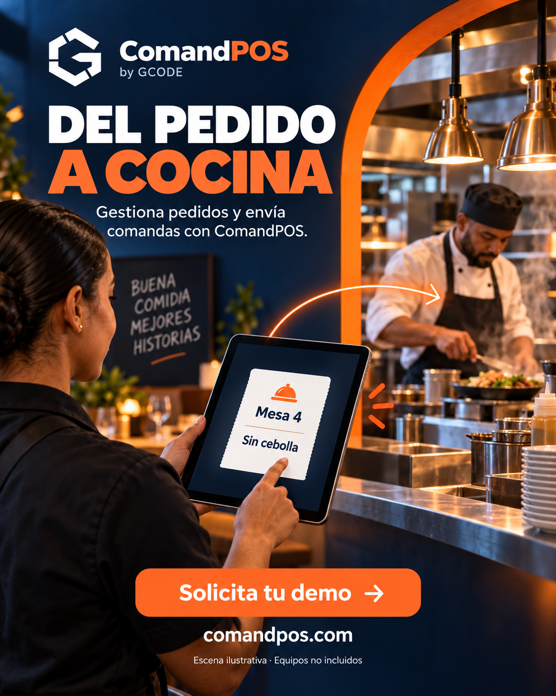
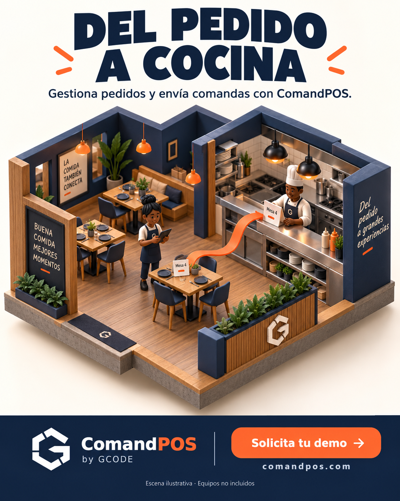

01Fotografía cinematográficaLuz cálida, profundidad y una escena de servicio más envolvente.Abrir en grande ↗Descargar PNG
02Papel recortadoTexturas, recortes y capas: la alternativa más cercana al espíritu de Paper Studio.Abrir en grande ↗Descargar PNG
03Tecnología y productoProducto protagonista, contraste azul/naranja y recorrido visual del pedido.Abrir en grande ↗Descargar PNG
04Restaurante en 3DUn restaurante en miniatura: una dirección ilustrada claramente diferente.Abrir en grande ↗Descargar PNG
05Editorial de alto impactoTipografía grande y composición editorial para que el mensaje destaque.Abrir en grande ↗Descargar PNG